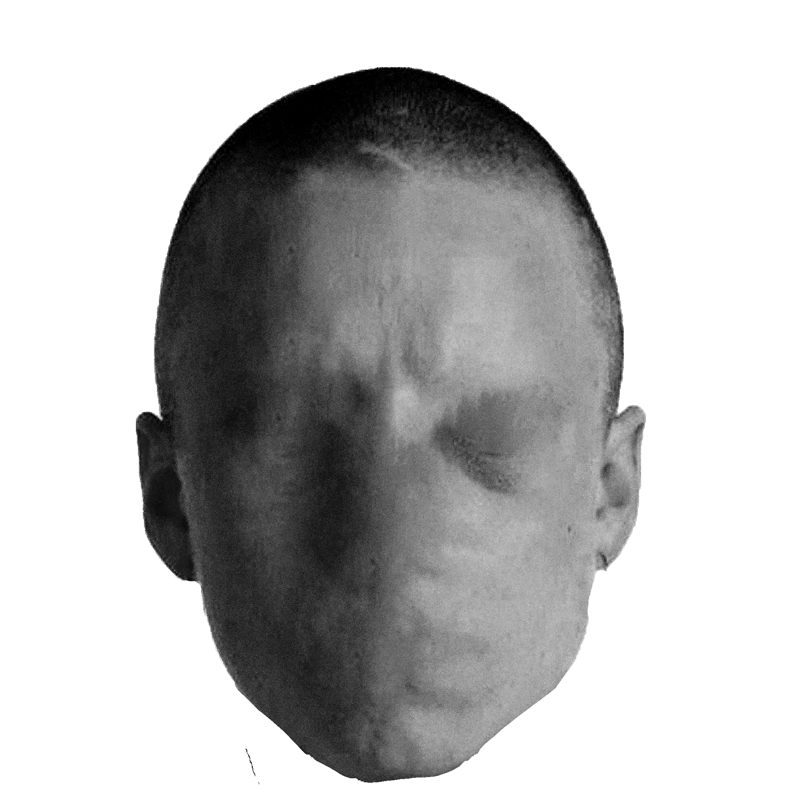
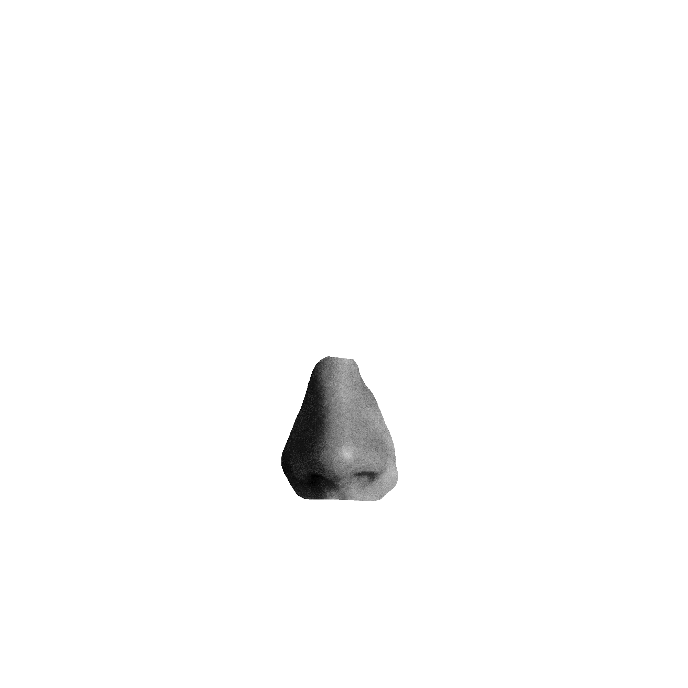
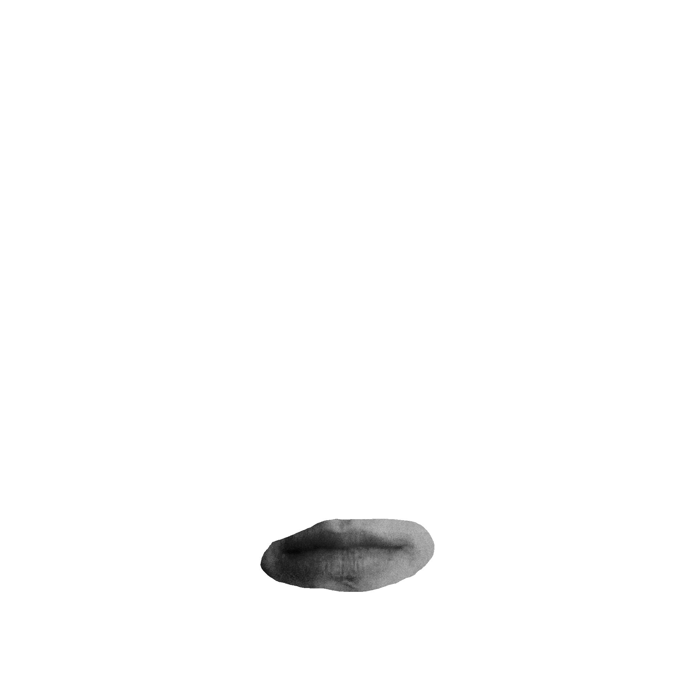
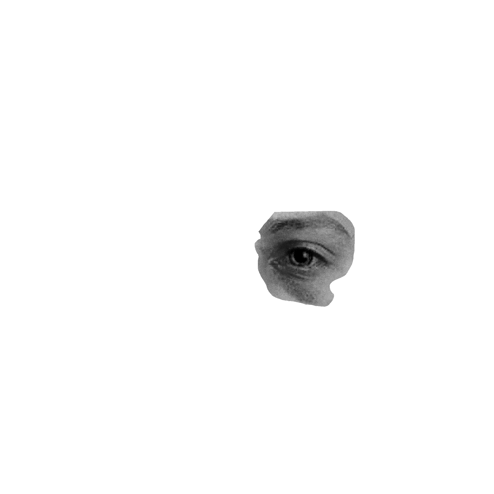
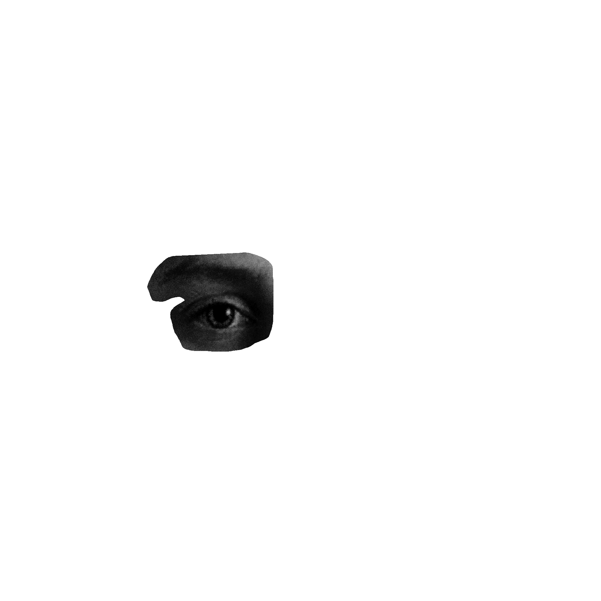

⚗
El Pueblo te Espera
Cada habitante del pueblo es único — generado por el azar, portador de un mal distinto. Diagnostica, prepara el remedio y salva a tu gente.







◆
Explora el Universo Curandero
Cada sección es un capítulo distinto del mundo de Curandero. Explóralos en el orden que sientas que el jaguar te llama.
I
Historia
El lore, la leyenda y el origen del linaje curandero
→
II
Sanación
Los dos caminos: herbolaria ancestral y magia espiritual
→
III
El Juego
El mundo vivo y místico de Curandero y sus características
→
IV
Herbolario
Los ingredientes sagrados: animales, minerales y vegetales
→
V
Tutorial
Video oficial y los seis pasos del curandero maestro
→
VI
Mecánicas
Diagnóstico, las tres esencias y el sistema de puntuación
→
VII
Personajes
Los pacientes del pueblo y el sistema procedural de generación
→
VIII
Comunidad
Únete a la tribu y recibe acceso anticipado al contenido
→
IX
Equipo
UtoFilms: las tres personas que construyeron este mundo
→
X
Desarrollo
Detrás del altar: investigación y creación de Curandero
→
🌿
Únete a la Tribu
Sé de los primeros en conocer las novedades. Recibe acceso anticipado, contenido exclusivo y participa en la creación del juego y expansiones futuras.